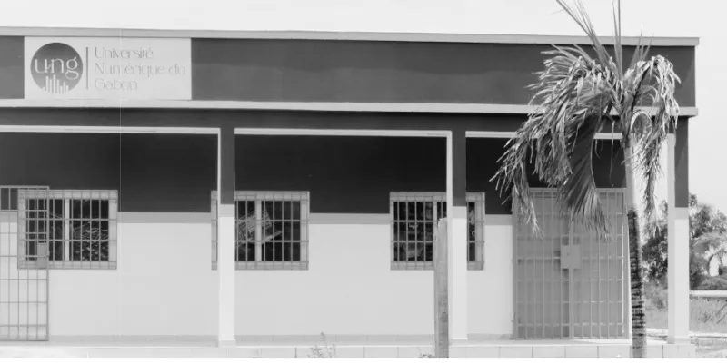
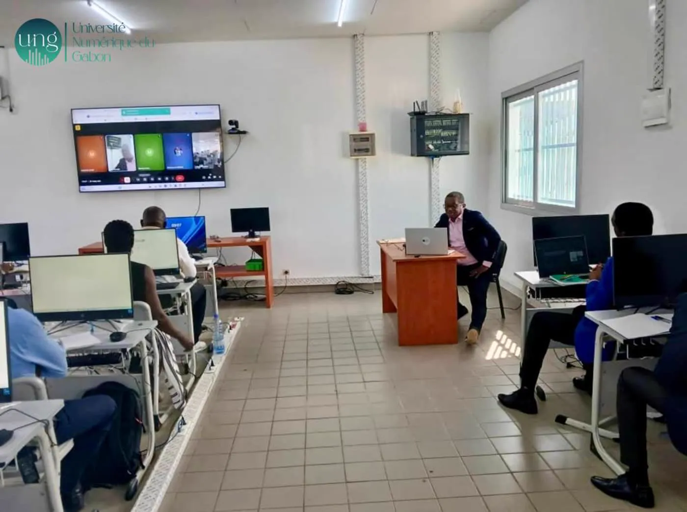
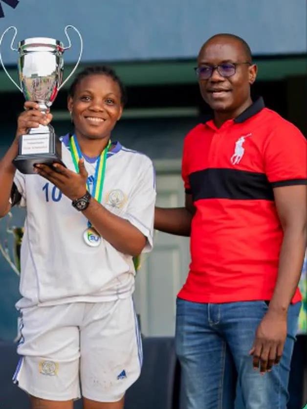
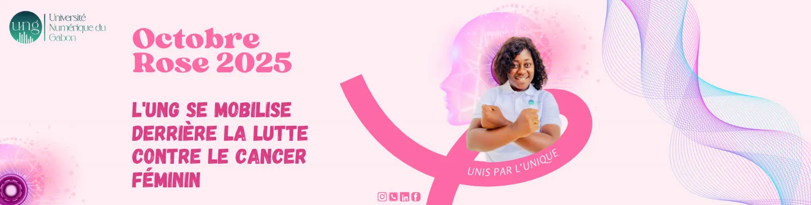

Un assistant entraîné sur les cours de l'UNG répond aux étudiants en dehors des séances, en français.
Université publique · 100 % à distance · Gabon
La connaissance,
accessible à tous.
L'UNG en chiffres
Une université née numérique. Chaque barre est l'une de ses forces.

Formations
Cinq pôles. Une seule université, partout.
Touchez un pôle pour l'ouvrir. Toutes les formations se suivent à distance, avec des tuteurs et des Espaces Numériques Ouverts.
IA & Données
Former au Gabon
les talents de l'IA.
De la licence au master, le pôle MPI couvre toute la chaîne de l'intelligence artificielle. Survolez un diplôme pour voir les métiers auxquels il mène.
Proposition à la direction
Des ateliers pratiques en machine learning sur les données ouvertes du Gabon.
Le dépôt des thèses et mémoires prévu dans les axes stratégiques, avec une recherche intelligente.
Des tableaux de bord pour repérer tôt les apprenants à distance en difficulté.

Campus sans murs
Six Espaces Numériques Ouverts
Des salles équipées dans le Grand Libreville, ouvertes à tous les étudiants. Les provinces sont les prochaines étapes.
- 30
- places et 30 ordinateurs
- 75″
- écran et webcam HD rotative
- VDI
- câblage haut débit
À la une
Les visages de l'UNG
Le mot du Coordonnateur
« L'UNG est pleinement engagée dans l'avenir, en exploitant les opportunités offertes par la technologie pour transformer l'éducation et l'apprentissage. »
Pr Jacques François MavoungouCoordonnateur académique
InnovationFormer autrement grâce aux technologies.
PartagePartenariats et synergies au cœur de la stratégie.
EmployabilitéDes formations alignées sur les emplois du pays.
Gouvernance
Six directions, rattachées au Rectorat
DERI
Études, Recherche et Innovation
DENO
Espaces Numériques Ouverts
DISI
Infrastructures et Systèmes d'Information
DDC
Développement et Coopération
DFIP
Formation et Ingénierie Pédagogique
CAQ
Cellule Assurance Qualité
Vie étudiante
À distance,
mais jamais seuls.
Plus de 2 000 apprenants font vivre l'UNG. Ils ont fondé leur association, la MUTUELLE, et une équipe de football masculine et une féminine. L'UNG s'engage aussi, comme pour Octobre Rose.


Partenariats
Un réseau au Gabon et en Afrique
Admissions 2026-2027
Rejoignez
l'UNG.
- Choisirsa formation parmi les 29 du catalogue.
- Se pré-inscrireen ligne, depuis n'importe où.
- Être admisaprès étude du dossier.
- Étudiersur la classe virtuelle et MyUNG.